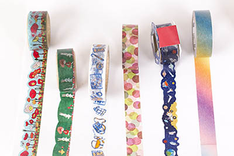

About tape|e|stries
Tape|e|stries features a variety of paper tape used to brighten the collector’s life. In addition to organizing the items by length and location of purchase, we have organized the items according to their patterns. Because the items have such detail, the collection allows the user to not only see the tape in actual size, but in greater scale. Mostly compiled in China, the collection shows a wide breadth of themes from space to the New York City skyline.
© Jenae Ramos, 2014